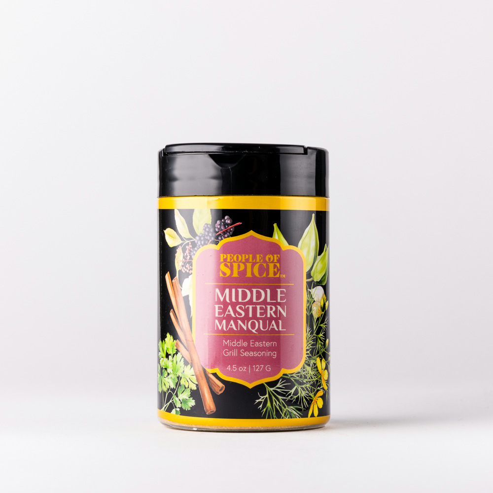

- Spice Rack
- Signature Blends
- Middle Eastern Manqual

Signature Blends
Middle Eastern Manqual
Middle Eastern Grill Seasoning
Warm
Built for the grill, this bold blend takes cues from baharat and seven-spice traditions. Allspice, cumin and cinnamon ignite over fire and conjure the scent of spice-laden alleyways.
- Inspired by
- Levantine grill houses
- Region
- The Levant
- Format
- Signature canister
- Item
- #52858